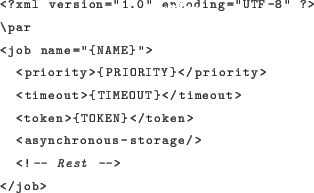
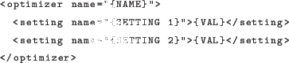
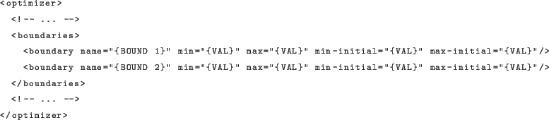
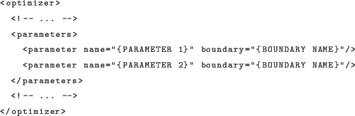
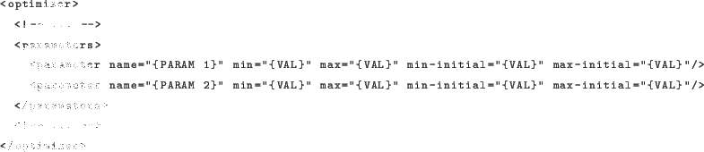
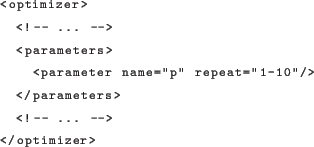
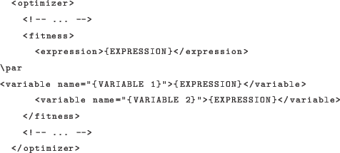
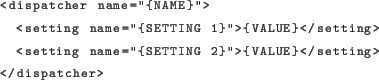
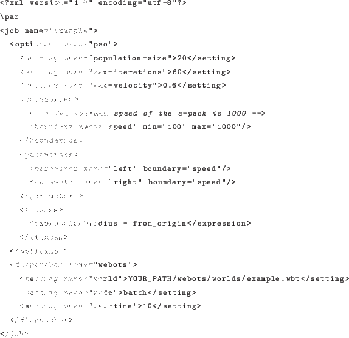

Next: Optimization Algorithms Up: optirunner Previous: optirunner Contents
job:

A job should always have a name. The name is used to generate the file name
in which results are written. The priority, timeout,
token and asynchronous-storage elements are all optional
and specify:
priority: the priority level at which you want to run the
job. This value defaults to 1 if unspecified. Higher priority jobs get
proportionally more time on the cluster (on average).
timeout: timeout indicating the maximum allowed time for
a task to run. Note that this is measuring real time and is
only used as a safety mechanism for badly behaving dispatchers. You
almost never have to specify this and is used mostly as a hack to not
get jobs stuck in never ending tasks.
token: an authentication token for the job. See also
section 4.2.2 for more information on authentication tokens.
asynchronous-storage: when specified, the SQLite database
is written to disk in asynchronous mode. This can result in significantly
faster optimizations for tasks that are very shortlived. Note however
that using asynchronous storage can lead to data loss in case of
unexpected failures (power outage). The default is to use synchronous
storage.
The remainder of the job description consists of
the optimizer, boundaries, parameters and dispatcher
elements defined inside the job element.
The optimizer element describes the type of optimization algorithm to
use and any settings that correspond to that particular optimization algorithm.
For example:

The name attribute identifies the optimization algorithm (for example 'pso'). The settings set settings specific to the optimization algorithm. When you for example use PSO, these settings include the maximum allowed particle velocity and different coefficients used in the algorithm. There are some settings available for all optimization algorithms, for more information see section 3.4.
The boundaries element specifies a set of boundary definitions (minimum
and maximum values) which are used in the parameters element. An example
boundaries definition:

Each boundary is named, and has a minimum and a maximum value. The name is
used in the parameter definition to reference a specific boundary. The
min-initial and max-initial attributes are optional and
specify respectively the minimum and maximum value to which the initial
population should be initialized (for population based algorithms).
The parameters element specifies the set of open parameters to be
optimized. An example definition:

Each parameter is named, and specifies by which boundary its value is bound.
In addition to specifying boundaries in a separate section so that they can be reused, you can also write boundary values in a more concise and simpler format directly in the parameter specification:

The optimization framework currently does not support the concept of vectors
or arrays for parameters. Some tasks however are more easily defined using
these concepts (for example, think of weights for a neural network). To
somewhat ease the specification of such repeated parameters, the following
syntax (note the repeat attribute) can be used:

This will generate 10 parameters with the names p1 to p10. The specified range can only contain simple integers (min and max) and these numbers are simply appended to the specified name. All other attributes (min, max, etc.) can still be used.
The last element in the optimizer node is the fitness element.
This can be used if you have
multiple objectives in your fitness function. By default, if you do not specify
this element, the first fitness value the dispatcher returns is used.
Dispatchers can return multiple fitness values if there are multiple objectives
to be used for optimization. In this case, it can be useful to be able to
define a mathematical expression combining these different values in a single
fitness value. As such, you can adjust the way you combine these different
objectives without having to modify the dispatcher. An example fitness
description:

The expression element in the fitness element describes the main
fitness expression to be evaluated. This expression can be a mathematical
expression consistent with most programming languages syntax (operators and
a small set of functions such as log, sin, etc.). The dispatcher will return
a dictionary (name
fitness) of fitness values, and you can refer
to such a value by using the name in the expression.
Additionally, you can add any number of variables in the fitness description containing a mathematical expression. You can refer to these variables from any expression as well. This can be convenient to specify some weights or constants which you can later modify easily.
The dispatcher element describes the dispatcher and dispatcher settings
to be used to evaluate a solution generated by the optimization algorithm. The
specific settings depend on the type of dispatcher used. An example definition:

The dispatcher name can be either a simple name, in which case it will be looked up in the system directory for optimization dispatchers (this is where system dispatchers such as the webots dispatcher are installed). On the other hand, you can also specify an absolute path to a dispatcher executable here.
The settings are specific per dispatcher, and are documented separately. Note that any number of additional settings can be specified here, custom to your specific job. For instance, using the webots dispatcher, you can retrieve any additional settings in your webots controller, and configure the simulation environment accordingly.
A full XML job description example:

Jesse van den Kieboom 2014-02-26